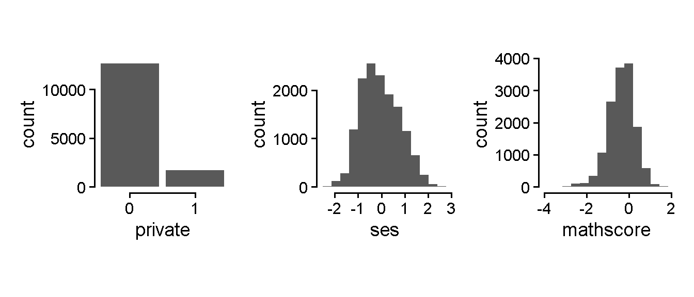
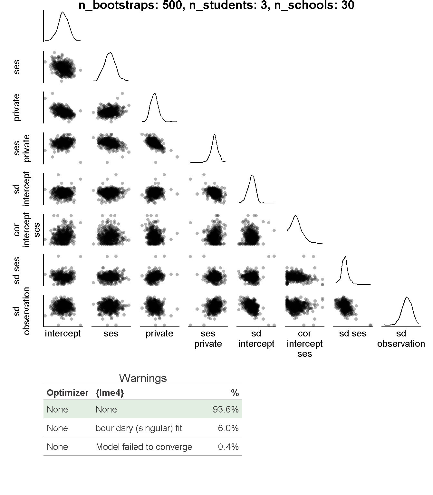
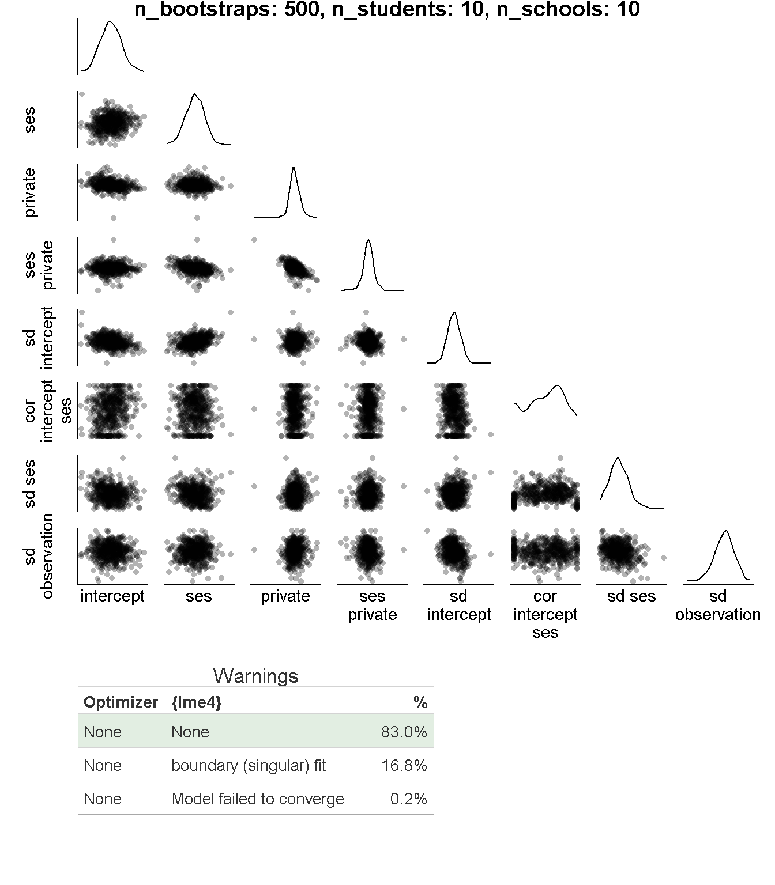
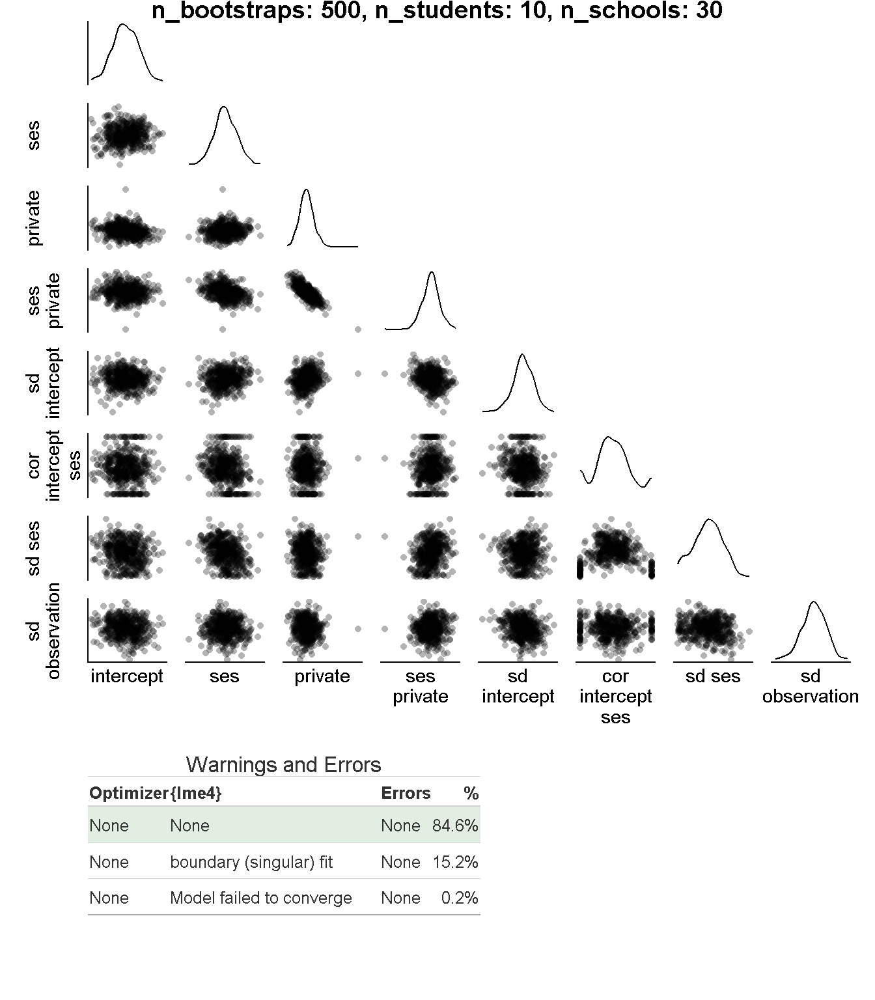
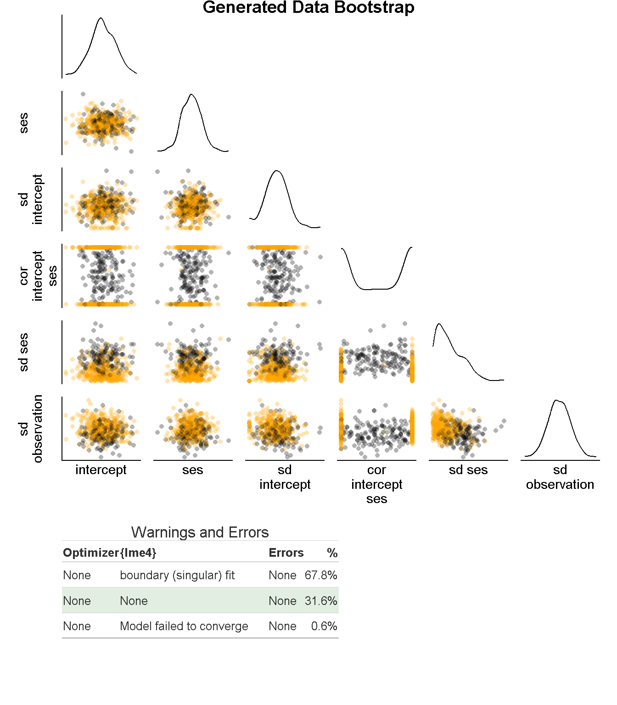
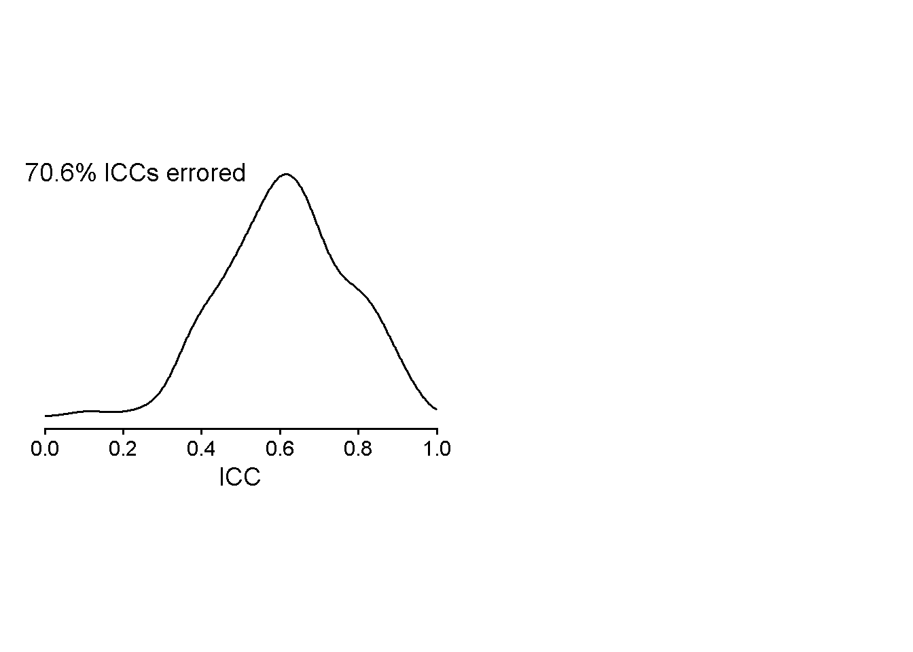
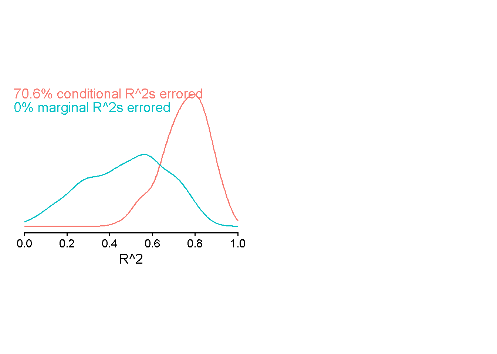

Code
library(tidyverse)
library(patchwork)
library(gt)
here::here("Scripts", "R") |> dir() |>
walk(\(file) glue::glue("{here::here('Scripts', 'R')}/{file}") |> source())library(tidyverse)
library(patchwork)
library(gt)
here::here("Scripts", "R") |> dir() |>
walk(\(file) glue::glue("{here::here('Scripts', 'R')}/{file}") |> source())ecls <- readRDS(here::here("..", "Data", "ECLS-K", "ECLS-K.rds"))ecls |>
names() |>
str_extract("[a-zA-Z]_*\\d*")
ecls |> select(starts_with("T1")) |> names()
ecls |> select(starts_with("c2shape")) |>
mutate(across(everything(), ~ recode_values(.x |> as.character(),
"1: CORRECT" ~ 1,
"2: INCORRECT" ~ 0,
"-9: NOT ASCERTAINED" ~ NA,
default = NA))) |>
colMeans(na.rm = T)
ecls |> select(starts_with("T1"))Model: two-levels (students nested in schools) with a level-one predictor (student SES), level-two predictor (private vs. public school), and an interaction between them. The effect of SES has a varying slope over school. Outcome is student math score.
Selecting columns with the outcome (math scores), level-one predictor (student SES), and level-two predictor (public vs. private school indicator). Removing any students with missing data on any of the predictors, and removing schools that have fewer than 10 students remaining.
ecls_dat <- ecls |>
select(childid, s2_id, x12sesl, x2pubpri, x2mthetk5) |>
mutate(private = recode_values(as.character(x2pubpri),
"1: PUBLIC" ~ 0,
"2: PRIVATE" ~ 1,
"-1: NOT APPLICABLE" ~ NA,
"-9: NOT ASCERTAINED" ~ NA),
schoolid = s2_id,
ses = x12sesl,
mathscore = x2mthetk5,
.keep = "unused") |>
drop_na() |>
# removing schools with less than 10 students
filter_out(.by = schoolid,
length(unique(childid)) < 10)
list(ecls |> rename(schoolid = s2_id), ecls_dat) |>
map(\(data) data |>
select(schoolid, childid) |>
summarize(schools = length(unique(schoolid)),
students = length(unique(childid)))) |>
list_rbind() |>
summarize(across(everything(), \(value)
range(value) |>
reduce(`-`) |>
abs())) |>
j_gt() |>
tab_header("Units Removed")| Units Removed | |
| schools | students |
|---|---|
| 456 | 3781 |
Distributions of the outcome and predictors in the remaining data.
ecls_dat |>
select(-c(childid, schoolid)) |>
imap(\(var, name) ecls_dat |>
ggplot(aes(x = var)) +
{if (length(unique(var)) == 2) geom_bar() else geom_histogram(bins = 14)} +
{if (length(unique(var)) == 2) scale_x_continuous(breaks = unique(var)) else NULL} +
guides(x = guide_axis(name, cap = "both"),
y = guide_axis(cap = "both")) +
theme(aspect.ratio = 1)) |>
wrap_plots()
Results from the model applied to the full dataset.
m0 <- lme4::lmer(mathscore ~ 1 + (1 | schoolid),
dat = ecls_dat)
sjPlot::tab_model(m0,
title = "Unconditional")
m1 <- lme4::lmer(mathscore ~ ses * private + (ses | schoolid),
dat = ecls_dat)
sjPlot::tab_model(m1,
title = "Conditional")| mathscore | |||
|---|---|---|---|
| Predictors | Estimates | CI | p |
| (Intercept) | -0.36 | -0.38 – -0.34 | <0.001 |
| Random Effects | |||
| σ2 | 0.31 | ||
| τ00 schoolid | 0.08 | ||
| ICC | 0.19 | ||
| N schoolid | 852 | ||
| Observations | 14393 | ||
| Marginal R2 / Conditional R2 | 0.000 / 0.194 | ||
| mathscore | |||
|---|---|---|---|
| Predictors | Estimates | CI | p |
| (Intercept) | -0.35 | -0.37 – -0.33 | <0.001 |
| ses | 0.28 | 0.27 – 0.30 | <0.001 |
| private | 0.12 | 0.07 – 0.18 | <0.001 |
| ses × private | -0.15 | -0.19 – -0.10 | <0.001 |
| Random Effects | |||
| σ2 | 0.29 | ||
| τ00 schoolid | 0.03 | ||
| τ11 schoolid.ses | 0.00 | ||
| ρ01 schoolid | -0.30 | ||
| ICC | 0.12 | ||
| N schoolid | 852 | ||
| Observations | 14393 | ||
| Marginal R2 / Conditional R2 | 0.137 / 0.239 | ||
params <- list(n_bootstraps = c(500),
n_students = c(3, 10),
n_schools = c(10, 30))
tibble(parameters = names(params),
values = map(params, \(values) reduce(values, list))) |>
gt() |>
tab_style(cell_text(weight = "bold"),
cells_column_labels()) |>
cols_label_with(fn = str_to_title)| Parameters | Values |
|---|---|
| n_bootstraps | 500 |
| n_students | 3, 10 |
| n_schools | 10, 30 |
n_conditions <- params |> map(length) |> reduce(`*`)Starting conditions: number of level-one units (students) within level-two units (schools). This set of parameters creates 4 conditions.
param_tbl <- do.call(crossing, params) |>
mutate(condition_id = row_number(),
.before = everything())
bs_dat <- param_tbl |>
pmap(\(...) tibble(...) |>
get_bootres())
saveRDS(bs_dat, here::here("Data", "2026-05-08_bs-dat.rds"))bs_dat <- readRDS(here::here("Data", "2026-05-08_bs-dat.rds"))
bs_dat |>
walk(\(bootres) {
plt_dat <- make_plt_dat(bootres)
pat <- make_plt_pattern(plt_dat)
n_terms <- plt_dat |>
select(n_terms) |>
max()
table_height_prop <- 1/4
{
(plt_dat |>
pull(plots) |>
unlist(recursive = F) |>
append(wrap_table(make_warnings_tbl(bootres))) |>
wrap_plots(design = pat,
axes = "collect",
heights = c(rep(((1 - table_height_prop) / n_terms),
times = n_terms),
table_height_prop))) |>
cowplot::ggdraw() +
cowplot::draw_label(
plot_annotation(bootres |>
head(1) |>
select(starts_with("param")) |>
rename_with(\(name) str_extract(name, "param_(.+)", group = 1)) |>
select(-condition_id) |>
imap_chr(\(value, name) glue::glue("{name}: {value}")) |>
glue::glue_collapse(sep = ", ")),
x = 0.5, y = 1, vjust = 1, fontface = "bold", size = 14)
} |>
print()
})



icc_dat <- bs_dat |>
map(\(data) data |>
select(model) |>
mutate(
icc = map_dbl(model, \(model) {
icc <- performance::icc(model) |>
pluck("ICC_adjusted")
ifelse(is.null(icc), NA, icc)
})
))
icc_dat |>
map(\(data) data |>
ggplot(aes(x = icc)) +
geom_density(na.rm = T) +
geom_text(data = data |>
mutate(icc_error = is.na(icc)) |>
summarize(percent_removed = mean(icc_error) * 100),
aes(label = glue::glue("{round(percent_removed, 2)}% ICCs errored"),
x = -Inf, y = Inf, vjust = 1, hjust = 0)) +
scale_x_continuous("ICC", limits = c(0, 1), breaks = seq(0, 1, .2)) +
scale_y_continuous(NULL, breaks = NULL) +
guides(x = guide_axis(cap = T)) +
theme(aspect.ratio = (1.618)^-1,
axis.line.y = element_blank())) |>
wrap_plots(ncol = 2, axes = "collect_x")
r2_dat <- bs_dat |>
map(\(data) data |>
select(model) |>
mutate(
r2s = map(model, \(model) {
r2s <- performance::r2(model)
r2_conditional <- r2s$R2_conditional
r2_marginal <- r2s$R2_marginal
tribble(~ r2_type, ~ r2_estimate,
"conditional", ifelse(is.null(r2_conditional), NA, r2_conditional),
"marginal", ifelse(is.null(r2_marginal), NA, r2_marginal))
})
) |>
unnest(r2s))
r2_dat |>
map(\(data) {
error_dat <- data |>
mutate(r2_error = is.na(r2_estimate)) |>
summarize(.by = r2_type,
percent_removed = mean(r2_error) * 100) |>
mutate(string = glue::glue("{round(percent_removed, 2)}% {r2_type} R^2s errored"))
data |>
ggplot(aes(x = r2_estimate, color = r2_type)) +
geom_density(na.rm = T) +
geom_text(data = error_dat,
aes(label = string,
x = -Inf, y = Inf, vjust = c(1, 2.3), hjust = 0)) +
scale_x_continuous("R^2", limits = c(0, 1), breaks = seq(0, 1, .2)) +
scale_y_continuous(NULL, breaks = NULL) +
guides(x = guide_axis(cap = T),
color = guide_none()) +
theme(aspect.ratio = (1.618)^-1,
axis.line.y = element_blank(),
axis.title.x = ggtext::element_markdown())
}) |>
wrap_plots(ncol = 2, axes = "collect_x")
Generating data from model estimates of one bootstrap hit.
# bs_dat |>
# pluck(1) |>
# unnest(tidy) |>
# filter(term == "ses") |>
# filter(estimate > quantile(estimate, .97)) |>
# arrange(desc(estimate)) # didn't estimate intercept
# bs_dat |>
# pluck(1) |>
# unnest(tidy) |>
# filter(term == "sd__(Intercept)") |>
# filter(estimate > quantile(estimate, .97)) |>
# arrange(desc(estimate))
data_gen_params <- bs_dat |>
pluck(1) |>
filter(id == "331") |>
unnest(tidy) |>
select(param_n_bootstraps, param_n_schools, param_n_students, term, estimate) |>
pivot_wider(names_from = term, values_from = estimate)
data_gen_params |>
gt() |>
fmt_number()| param_n_bootstraps | param_n_schools | param_n_students | (Intercept) | ses | private | ses:private | sd__(Intercept) | cor__(Intercept).ses | sd__ses | sd__Observation |
|---|---|---|---|---|---|---|---|---|---|---|
| 500.00 | 10.00 | 3.00 | −0.43 | 0.09 | 0.29 | 0.23 | 0.20 | 0.11 | 0.22 | 0.22 |
data_gen_vcov <- matrix(c(data_gen_params$`sd__(Intercept)`,
0,
0,
data_gen_params$`sd__ses`),
ncol = 2, byrow = T) %*%
matrix(c(1,
data_gen_params$`cor__(Intercept).ses`,
data_gen_params$`cor__(Intercept).ses`,
1),
ncol = 2, byrow = T) %*%
matrix(c(data_gen_params$`sd__(Intercept)`,
0,
0,
data_gen_params$`sd__ses`),
ncol = 2, byrow = T)gen_data <- function(data_gen_params) {
tibble(schoolid = seq(1, data_gen_params$param_n_schools),
n_students = data_gen_params$param_n_students,
private = rbinom(data_gen_params$param_n_schools, 1, .3),
beta_ses = data_gen_params$ses,
beta_private = data_gen_params$private,
beta_private_by_ses = data_gen_params$`ses:private`) |>
bind_cols(varying_effects = MASS::mvrnorm(data_gen_params$param_n_schools,
mu = c(data_gen_params$`(Intercept)`, data_gen_params$ses),
Sigma = data_gen_vcov) |>
as_tibble() |>
set_names(c("alpha_school", "beta_ses_school"))) |>
uncount(n_students) |>
mutate(studentid = row_number(),
.after = schoolid) |>
mutate(ses = rnorm(data_gen_params$param_n_schools * data_gen_params$param_n_students),
private_by_ses = private * ses,
mu_school = alpha_school +
beta_private * private +
beta_private_by_ses * private_by_ses,
mu = mu_school + beta_ses * ses,
mathscore = rnorm(data_gen_params$param_n_schools * data_gen_params$param_n_students,
mean = mu, sd = data_gen_params$sd__Observation)) |>
nest(gen_params = c(starts_with("beta"), starts_with("alpha"), starts_with("mu")))
}frm <- mathscore ~ ses * private + (ses | schoolid)
bs_gen_dat <- tibble(iter = seq(1, data_gen_params$param_n_bootstraps),
strap = map(iter, \(iter) gen_data(data_gen_params))) |>
mutate(res = map(strap,
safely(\(strap) lme4::lmer(frm,
data = strap),
otherwise = NA_real_)),
model = map(res, "result"),
error = map_chr(res, \(res) pluck(res, "error", "message", .default = NA)),
tidy = imap(model, \(model, idx) model |>
broom.mixed::tidy() |>
mutate(iter = idx)),
opt_warnings = map_chr(model, get_warnings),
lme4_warnings = map_chr(model, get_lme4_warnings)) |>
bind_cols(data_gen_params)list(bs_gen_dat) |>
walk(\(bootres) {
plt_dat <- make_plt_dat(bootres)
pat <- make_plt_pattern(plt_dat)
n_terms <- plt_dat |>
select(n_terms) |>
max()
table_height_prop <- 1/4
{
(plt_dat |>
pull(plots) |>
unlist(recursive = F) |>
append(wrap_table(make_warnings_tbl(bootres))) |>
wrap_plots(design = pat,
axes = "collect",
heights = c(rep(((1 - table_height_prop) / n_terms),
times = n_terms),
table_height_prop))) |>
cowplot::ggdraw() +
cowplot::draw_label(
plot_annotation("Generated Data Bootstrap"),
x = 0.5, y = 1, vjust = 1, fontface = "bold", size = 14)
} |>
print()
})
icc_dat <- list(bs_gen_dat) |>
map(\(data) data |>
select(model) |>
mutate(
icc = map_dbl(model, \(model) {
icc <- performance::icc(model) |>
pluck("ICC_adjusted")
ifelse(is.null(icc), NA, icc)
})
))
icc_dat |>
map(\(data) data |>
ggplot(aes(x = icc)) +
geom_density(na.rm = T) +
geom_text(data = data |>
mutate(icc_error = is.na(icc)) |>
summarize(percent_removed = mean(icc_error) * 100),
aes(label = glue::glue("{round(percent_removed, 2)}% ICCs errored"),
x = -Inf, y = Inf, vjust = 1, hjust = 0)) +
scale_x_continuous("ICC", limits = c(0, 1), breaks = seq(0, 1, .2)) +
scale_y_continuous(NULL, breaks = NULL) +
guides(x = guide_axis(cap = T)) +
theme(aspect.ratio = (1.618)^-1,
axis.line.y = element_blank())) |>
wrap_plots(ncol = 2, axes = "collect_x")
r2_dat <- list(bs_gen_dat) |>
map(\(data) data |>
select(model) |>
mutate(
r2s = map(model, \(model) {
r2s <- performance::r2(model)
r2_conditional <- r2s$R2_conditional
r2_marginal <- r2s$R2_marginal
tribble(~ r2_type, ~ r2_estimate,
"conditional", ifelse(is.null(r2_conditional), NA, r2_conditional),
"marginal", ifelse(is.null(r2_marginal), NA, r2_marginal))
})
) |>
unnest(r2s))
r2_dat |>
map(\(data) {
error_dat <- data |>
mutate(r2_error = is.na(r2_estimate)) |>
summarize(.by = r2_type,
percent_removed = mean(r2_error) * 100) |>
mutate(string = glue::glue("{round(percent_removed, 2)}% {r2_type} R^2s errored"))
data |>
ggplot(aes(x = r2_estimate, color = r2_type)) +
geom_density(na.rm = T) +
geom_text(data = error_dat,
aes(label = string,
x = -Inf, y = Inf, vjust = c(1, 2.3), hjust = 0)) +
scale_x_continuous("R^2", limits = c(0, 1), breaks = seq(0, 1, .2)) +
scale_y_continuous(NULL, breaks = NULL) +
guides(x = guide_axis(cap = T),
color = guide_none()) +
theme(aspect.ratio = (1.618)^-1,
axis.line.y = element_blank(),
axis.title.x = ggtext::element_markdown())
}) |>
wrap_plots(ncol = 2, axes = "collect_x")
# bootres <- get_bootres(10)
#
# plt_dat <- make_plt_dat(bootres)
#
# pat <- make_plt_pattern(plt_dat)
#
# plt_dat |>
# pull(plots) |>
# unlist(recursive = F) |>
# wrap_plots(design = pat,
# axes = "collect")
list(n_bootstraps = c(10, 20),
n_students = c(3, 10),
n_schools = c(5, 20)) |>
do.call(crossing, args = _) |>
mutate(condition_id = row_number()) |>
nest(params = -condition_id) |>
pull(params) |>
map(\(params) {
print(params)
params |>
pivot_longer(everything(),
names_to = "param",
values_to = "value") |>
pmap(\(param, value) assign(param, value))
glue::glue("{param}: {value}")
})
# bs_dat <- do.call(crossing, params) |>
# mutate(condition_id = row_number()) |>
# pmap(\(...) {
# list2env(list(...), envir = environment())
# glue::glue("condition {condition_id}: n_bootstraps={n_bootstraps}, n_students={n_students}, n_schools={n_schools}")
#
# get_bootres(n_bootstraps, n_students, n_schools) |>
# mutate(condition_str = glue::glue("condition {condition_id}: n_bootstraps={n_bootstraps}, n_students={n_students}, n_schools={n_schools}"))
# })
bs_dat |>
head(2) |>
map(\(bootres) {
plt_dat <-
make_plt_pattern(plt_dat)
})
make_plt_dat(bres) |>
get_table_row_location
p1 <- ggplot(mtcars) + geom_point(aes(mpg, disp)) + theme_classic()
p2 <- ggplot(mtcars) + geom_boxplot(aes(gear, disp, group = gear)) + theme_classic()
p3 <- ggplot(mtcars) + geom_bar(aes(gear)) + facet_wrap(~cyl) + theme_classic()
design <- "
AB
AC
"
(p1 + p2 + p3) +
plot_layout(design = design, heights = c(3, 1), axes = "collect") &
theme_classic()